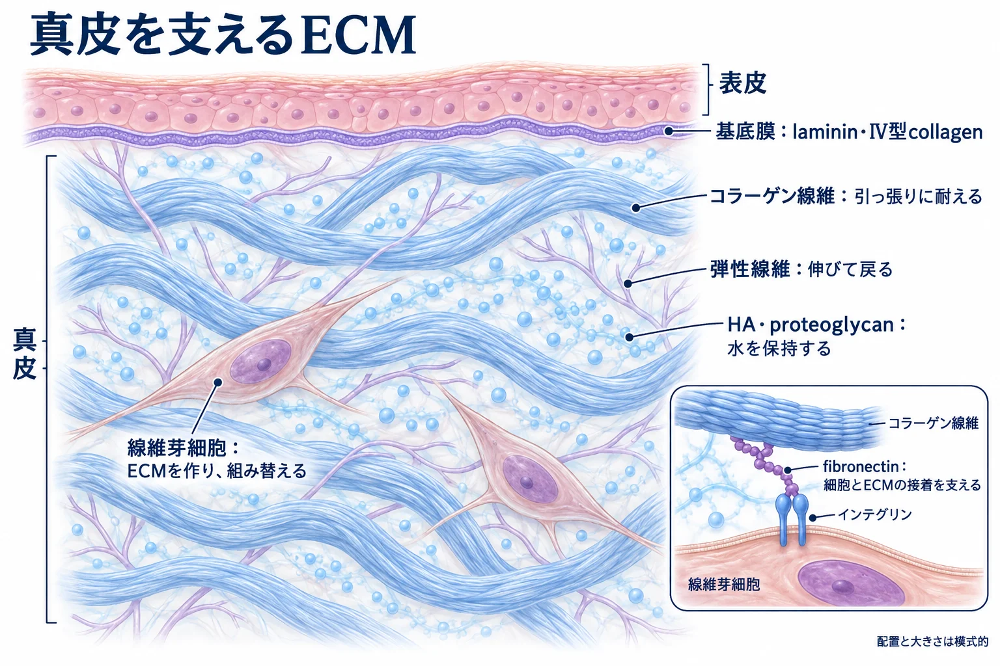
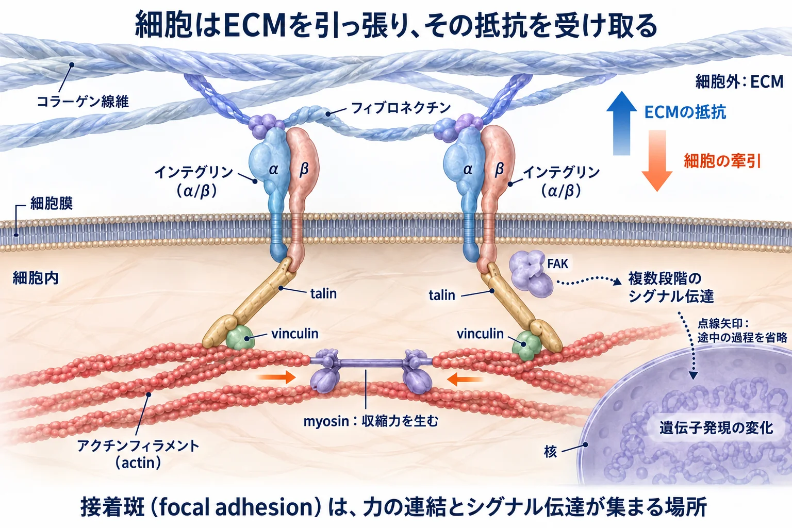
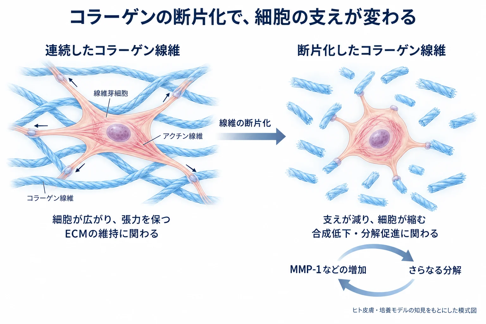

美容皮膚科 ／ 組織の生化学
細胞外基質（ECM）
公開 2026-09-14
皮膚、骨、軟骨、腱では、硬さも形も働きも異なります。その違いを作るのは、細胞の種類だけではありません。細胞の外に何が作られ、どう組み立てられているかも、組織の性質を決めています。
この章の一言
ECMは、細胞の外で組織を支え、細胞の働きを調節する環境です。細胞はその環境を作り、作り替えながら生きています。
1 ECMは全身の組織を形作る
ECM（extracellular matrix：細胞外基質）は、細胞が作り、細胞の外に組み立てたタンパク質や糖鎖などの総称です。細胞はほかの細胞やECMと接着し、その関係の中で形や働きを保っています。細胞の外には組織液もあり、「細胞以外のものすべて」がECMというわけではありません。
| 組織・構造 | ECMの組み方と働き |
|---|---|
| 真皮 | コラーゲン線維や弾性線維が、水を含む基質の中に広がり、皮膚の強さや伸び戻りを支えます |
| 腱 | 主にI型コラーゲンの線維が一定方向に並び、筋肉の力を骨へ伝えます |
| 軟骨 | 主にII型コラーゲンの網目と、水を多く保持するproteoglycanが、圧縮に耐える構造を作ります |
| 骨 | 主にI型コラーゲンを含む基質にリン酸カルシウムの結晶が沈着し、硬い支持組織になります |
| 基底膜 | lamininやIV型コラーゲンなどが薄い層を作り、上皮の下や血管の周囲などで細胞を支えます |
ECMには、真皮のように細胞の間に広がる間質のECMと、基底膜のように薄い層を作るECMがあります。表皮では細胞同士が密に接していますが、その下には基底膜があります。筋肉や脂肪組織にも、細胞を囲み、組織をつなぐECMがあります。
真皮では線維芽細胞（fibroblast）、軟骨では軟骨細胞、骨では骨芽細胞などが主な作り手です。基底膜の形成には上皮細胞や内皮細胞、周囲の細胞も関わります。
真皮の線維芽細胞は、ECMの材料を作るとともに、ECMを分解する酵素も出します。 古い構造を取り除き、新しい成分を組み立てることで、周囲のECMを更新しています。
2 ECMを作る材料と、その組み合わせ
真皮を例に、材料がどこにあり、何を担うかを見ます。

| 成分 | 構造と役割 |
|---|---|
| collagen（コラーゲン） | 真皮では主にI型・III型が線維を作り、引っ張る力に耐えます |
| 弾性線維 | elastinと、fibrillinを含む微細線維からなり、伸びた組織が戻る働きを支えます |
| proteoglycan・GAG | 糖鎖が水を保持します。成分によって、コラーゲン線維の形成や成長因子の保持にも関わります |
| hyaluronic acid：HA（ヒアルロン酸） | GAGの一種です。水を含む環境を作り、細胞の移動や組織の性質に関わります |
| fibronectin（フィブロネクチン） | 細胞の接着を支え、コラーゲンなどのECM成分と細胞をつなぎます |
| laminin・IV型collagen | 基底膜を構成します。表皮と真皮の接合部（DEJ）の構造は表皮とターンオーバーで扱います |
同じコラーゲン量でも、線維が連続しているか、どの方向に並ぶか、どの程度架橋されているかによって、組織の力学的な性質は変わります。
GAG（glycosaminoglycan）は、繰り返し構造を持つ長い糖鎖です。proteoglycanは、コアタンパク質にGAGが結合した分子を指します。HAはGAGの一種ですが、コアタンパク質には共有結合していません。
成分を作るだけでなく、細胞の外で組み立てる過程も必要です。例えば、コラーゲンは線維として並び、弾性線維ではelastinと微細線維が組み合わさって働きます。成分の性質と組み立ては線維芽細胞とコラーゲン、弾性線維と膠原線維で扱います。
3 ECMは細胞の接着と情報伝達を支える
ECMの構造は、細胞がどこに接着し、どう広がり、どの方向へ動けるかに関わります。また、成長因子が局所に留まり、細胞に作用する場にもなっています。
接着が、細胞の形と働きにつながる
細胞は、膜上のintegrin（インテグリン）などの受容体を介してECMに接着します。integrinは細胞外のECMと細胞内の骨格をつなぎ、接着に伴うシグナルを細胞内へ伝えます。
接着する相手や配置が変わると、細胞の形や、増殖・生存・分化に関わる応答も変わります。細胞が移動するときには、進む側で新しい接着を作り、後方の接着を解きます。ECMの線維の並びや隙間も、移動の方向や通りやすさに関わります。
成長因子を保持し、細胞への作用を調節する
細胞は、成長因子というタンパク質のシグナルを受け取り、増殖や分化、作る物質の量を調節します。ECMには、この成長因子を周囲に留め、細胞へ届ける働きもあります。
例えば、TGF-β（トランスフォーミング増殖因子β）は、線維芽細胞に働きかけ、コラーゲンなどのECM産生を促します。傷の修復では、新しい組織を作る反応を支えるシグナルの一つです（→ 炎症と創傷治癒）。
TGF-βは、働きを抑えた状態でECMに蓄えられています。この状態を潜在型と呼びます。活性化されると、細胞表面の受容体に結合し、細胞内へシグナルを伝えます。ECMは、こうした因子がどこで、いつ働くかにも関わっています。Wipffら, 2007
詳しく：成長因子を「保持する」と「受容体へ提示する」
heparan sulfate（ヘパラン硫酸）という糖鎖を持つproteoglycanは、ECMにも細胞表面にも存在します。ECM内では成長因子を局所に保持し、細胞表面では成長因子と受容体が結合するのを助ける場合があります。
Yayonらは、細胞表面のheparan sulfateがbFGF（FGF2）と高親和性受容体の結合に必要となることを、培養細胞で示しました。「成長因子がある」だけでなく、周囲の糖鎖との組み合わせもシグナルの成立に関わる例です。Yayonら, 1991
4 力も情報になる：mechanotransduction
ECMが伝える情報には、硬さや張力といった力学的な性質もあります。mechanotransduction（メカノトランスダクション）は、力学的な刺激を細胞内の生化学的なシグナルへ変える仕組みです。
細胞はECMを引っ張り、その抵抗を受け取る
細胞は、移動したり、周囲の線維を並べ替えたりするときにECMを引っ張ります。創傷治癒では、筋線維芽細胞がこの力を強く発揮し、創を縮めます。
細胞内では、actin線維とmyosinがactomyosinという収縮系を作ります。細胞がECMに接着した状態で収縮すると、ECMを引っ張る力が生じます。ECMが抵抗すれば、その接着部と細胞骨格にも張力がかかります。
integrinとactinをつなぐtalinなどの分子と、シグナルを伝えるFAKなどが集まる場所を、focal adhesion（接着斑）と呼びます。細胞はここで起こるタンパク質の変形や結合の変化を、細胞内の反応につなげます。

詳しく：力を受けると、接着部で何が変わるのか
図中のtalinは、integrinとactinをつなぐタンパク質です。張力でtalinの一部がほどけると、vinculinが結合できる部位が現れます。vinculinはactinとの連結を補強します。これが、力によって接着部の構成が変わる一例です。del Rioら, 2009
FAK（focal adhesion kinase）は接着部で働く酵素です。ECMとactinを直接つなぐ連結分子とは役割が異なり、接着に伴う変化を増殖・移動・生存などのシグナルへつなぎます。
力が伝わると、細胞の反応が変わる
核での応答に関わる分子の一つがYAP/TAZです。核に入ると転写因子と協力し、増殖やECM産生に関わる遺伝子の発現を調節します。培養細胞では、硬い基質上で細胞が十分に広がり、張力を保てる条件で核に集まりやすくなります。Dupontら, 2011
創傷の修復では、細胞がECMを引く力が、蓄えられていたTGF-βを活性化するきっかけにもなります。活性化されたTGF-βは、線維芽細胞のECM産生や収縮する働きを促します。創を縮める力と、新しいECMを作る反応がつながる仕組みです。Wipffら, 2007
詳しく：細胞が引く力が、TGF-βのシグナルに変わるまで
潜在型TGF-βは、LAPというタンパク質に結合して活性が抑えられています。LTBPというタンパク質が、この複合体をECMに固定します。
細胞表面の一部のintegrinがLAPに結合し、細胞内の収縮力を伝えます。ECM側の固定が引く力を支えると、LAPの構造が変わり、TGF-βが受容体に結合できるようになります。
受容体からのシグナルはSMADなどを介して核へ伝わり、コラーゲン産生や収縮に関わる遺伝子の発現を調節します。Wipffらは、筋線維芽細胞の収縮による潜在型TGF-β1の活性化と、ECM側で力を支える必要性を実験で示しました。Wipffら, 2007
硬さは「力を加えたときの変形しにくさ」、張力は「引っ張り合っている力」です。細胞の反応は硬さだけでなく、接着できる場所や広がれる範囲、ほかのシグナルにも左右されます。
詳しく：力をかける時間でも、ECMの変形は変わる
皮膚には、力を外すと戻ろうとする応答と、時間をかけて変形する応答があり、この性質を粘弾性と呼びます。
一定の力をかけ続けると時間とともに変形が増える現象がクリープ、一定の変形を保つために必要な力が時間とともに減る現象が応力緩和です。ヒト皮膚の測定でも、変形と回復には時間依存性が認められます。Escoffierら, 1989
クリープは「永久に戻らない」という意味ではありません。力を外したあとの回復、損傷、生体内での再構築は分けて考えます。顔のたるみに関わる組織の変化はたるみの多層構造で扱います。
5 ECMは作られ、分解され、組み替えられる
線維芽細胞は、コラーゲンなどの材料を分泌する一方で、MMP（matrix metalloproteinase）という分解酵素も分泌します。 材料は新しいECMの構造になり、MMPは既存のECMを切断します。例えばMMP-1は、I型・III型コラーゲンを切断する酵素です。
分解は、古い成分や傷んだ構造を取り除き、組み替えを進めるために必要です。MMPの働きは、酵素の活性化や、TIMPという阻害タンパク質によって調節されます。MMPは線維芽細胞のほか、免疫細胞などからも供給されます。
こうした合成・分解と、細胞が線維の並びを変える働きを通じたECMの作り替えを、remodeling（リモデリング）と呼びます。細胞がECMを更新し、変わったECMが再び細胞の接着や働きに影響します。
コラーゲンが断片化すると、細胞の支えが減る

加齢や紫外線に伴ってコラーゲンの分解が進むと、線維芽細胞が接着して力をかけられる連続した線維が減ります。細胞は広がりにくくなり、細胞骨格の張力も変わります。
ヒト皮膚と培養モデルの研究では、この変化に伴うコラーゲン分解酵素MMP-1の増加や、コラーゲン産生の低下が示されています。細胞を支える構造の変化が、さらにECMの維持を難しくする関係です。Fisherら, 2009、Xiaら, 2013
詳しく：断片化は、細胞内の反応にも影響する
Fisherらの研究では、部分的に分解したコラーゲン内の線維芽細胞で、細胞の広がりの低下と、酸化ストレス・MMP-1の増加が認められました。
Xiaらの培養実験では、コラーゲン断片化に伴い、TGF-βを受け取る受容体とI型procollagenの発現が低下しました。細胞が接着する構造の変化は、成長因子への応答や新しいECMの産生にも影響します。細胞自体の老化と周囲のECMの変化は、互いに重なります（→ 細胞老化）。
線維化では、修復の反応が続き、ECMが過剰に蓄積する
創傷の修復では、線維芽細胞が新しいECMを作り、一部は収縮力の強いmyofibroblast（筋線維芽細胞）になります。修復が進むと、細胞の活動が落ち着き、作られた組織の再編が進みます。
炎症や張力などの刺激が続くと、ECMの産生と除去の釣り合いが崩れ、コラーゲンなどが過剰に蓄積することがあります。これが線維化です。線維束の配列や架橋も変わり、組織が伸びにくくなったり、収縮による引きつれが残ったりします。肥厚性瘢痕・ケロイドの特徴は炎症と創傷治癒で扱います。
ここにはTGF-βと力の循環も関わります。細胞が引く力を硬いECMが支えると、潜在型TGF-βが活性化されやすくなります。TGF-βがECM産生と細胞の収縮を促すことで、修復の反応が持続する方向に働きます。この循環は、線維化を維持する仕組みの一つとして研究されています。Wipffら, 2007
臨床につながる：創部をテープで支える意味
創に繰り返しかかる張力を減らすことは、修復する組織を安定させるうえで重要です。テーピングなどによる創部の支持は、この考え方につながります。Atkinsonら, 2005
加齢では、線維の断片化と硬さの変化が重なる
加齢した皮膚では、コラーゲン線維のつながりが失われる一方、残った線維に糖化による架橋が蓄積します。線維の連続性と、線維そのものの硬さは、それぞれ別の性質です。 局所の線維が硬くても、組織全体として力を伝える網目が乱れていれば、皮膚をしなやかに支える働きは損なわれます。
| 変化 | ロープで編んだ網にたとえると | 実際のECMでは |
|---|---|---|
| 断片化 | ロープが途中で切れ、網として力を伝えにくくなる | MMPなどが線維を切断し、補充・再構築が追いつかないと、細胞が接着して力をかける連続した構造が減る |
| 糖化による架橋 | ロープ同士に余分な接着ができ、動きにくくなる | 長く残るコラーゲンにAGE架橋が形成され、硬くなり、酵素で分解されにくくなる |
| 線維化 | 修繕用のロープを足し続け、網が密に詰まる。さらに引き寄せられると、縮んだ形が残る | 修復・炎症のシグナルが続いてECMが過剰に蓄積し、配列・架橋や細胞の収縮も、硬さや引きつれに関わる |
加齢したヒト皮膚では、線維の断片化と線維束の硬さの増加が併存することが報告されています。加齢に伴うECMの変化は、こうした分解・架橋・蓄積を部位や経過に応じて見ていきます。「硬い」は組織の性質を表す所見で、「線維化」はECMが過剰に蓄積する病的な変化を指します。Heら, 2023
詳しく：断片化と硬さを分けて調べたヒト皮膚の研究
Heらは、日光にさらされにくい臀部の若年者と高齢者の皮膚を比較し、高齢者ではコラーゲンの断片化・配列の乱れと、線維束の硬さの増加を認めました。
さらに皮膚の器官培養で、MMP-1による処理はコラーゲンの断片化を、糖化を起こす処理は硬さの増加をもたらしました。分解と糖化が、それぞれ異なる物理的変化に関わることを示しています。
糖化による架橋を導入したI型コラーゲンの材料実験では、硬さの増加と、酵素による分解への抵抗性の増加も報告されています。コラーゲンの糖化架橋を調べた研究, 2017
この硬さは、皮膚切片の局所を微小な探針で測定した値です。顔の皮膚全体の伸びや戻りには、線維の配列・水分・弾性線維・皮下組織も関わります。糖化の反応は糖化とAGE、多層構造としての支持はたるみの多層構造で扱います。Heら, 2023
美容医療でECMの変化を見るときには、量や厚みとともに、柔軟性、伸び戻り、周囲との動きやすさも重要です。組織を支える構造が再建されたのか、硬さや引きつれが残ったのかという視点で、修復の結果を捉えます。施術後の修復と瘢痕の評価は炎症と創傷治癒で扱います。
詳しく：がんの浸潤にも、ECMの組み替えが関わる
がん細胞が周囲の組織へ広がる過程を浸潤と呼びます。ECMはその進行を妨げる構造にもなりますが、がん細胞や周囲の細胞による分解・再配列によって、細胞が進みやすい環境になることもあります。
Provenzanoらは、マウス乳腺腫瘍などを用いた研究で、腫瘍周囲のコラーゲンの配列と、線維に沿う局所浸潤の関係を示しました。ECMの量だけでなく、並び方が細胞の移動に関わる例です。Provenzanoら, 2006
遠隔臓器への転移には、血管への侵入や移動先での生存・増殖など、さらに複数の過程が必要です。ECMの変化はそれらに関わる要素の一つです。
この章の到達点
- ECMは全身にあり、材料と組み方の違いが、皮膚・腱・軟骨・骨・基底膜などの性質を作ります。
- ECMには、力に耐える線維、水を保持する物質、細胞の接着を支える分子があります。
- ECMは接着と移動を支え、成長因子の保持・提示を通じても細胞の働きを調節します。
- 硬さや張力が細胞の反応に変換される仕組みがmechanotransductionです。
- 細胞がECMを作り替え、変わったECMが再び細胞へ影響します。この関係が正常な維持にも、修復や病的な変化にも関わります。
参考文献
- del Rio A, et al. Stretching single talin rod molecules activates vinculin binding. Science. 2009;323:638–641. DOI: 10.1126/science.1162912. PMID: 19179532.
- Dupont S, et al. Role of YAP/TAZ in mechanotransduction. Nature. 2011;474:179–183. DOI: 10.1038/nature10137. PMID: 21654799.
- Wipff PJ, et al. Myofibroblast contraction activates latent TGF-β1 from the extracellular matrix. J Cell Biol. 2007;179:1311–1323. DOI: 10.1083/jcb.200704042. PMID: 18086923.
- Fisher GJ, et al. Collagen fragmentation promotes oxidative stress and elevates matrix metalloproteinase-1 in fibroblasts in aged human skin. Am J Pathol. 2009;174:101–114. DOI: 10.2353/ajpath.2009.080599. PMID: 19116368.
- Xia W, et al. Expression of catalytically active matrix metalloproteinase-1 in dermal fibroblasts induces collagen fragmentation and functional alterations that resemble aged human skin. Aging Cell. 2013;12:661–671. DOI: 10.1111/acel.12089.
- Escoffier C, et al. Age-related mechanical properties of human skin: an in vivo study. J Invest Dermatol. 1989;93:353–357. PMID: 2768836.
- Yayon A, et al. Cell surface, heparin-like molecules are required for binding of basic fibroblast growth factor to its high affinity receptor. Cell. 1991;64:841–848. PMID: 1847668.
- Provenzano PP, et al. Collagen reorganization at the tumor-stromal interface facilitates local invasion. BMC Med. 2006;4:38. DOI: 10.1186/1741-7015-4-38. PMID: 17190588.
- He T, Fisher GJ, Kim AJ, Quan T. Age-related changes in dermal collagen physical properties in human skin. PLoS One. 2023;18(12):e0292791. DOI: 10.1371/journal.pone.0292791. PMID: 38064445.
- Atkinson JM, et al. A randomized, controlled trial to determine the efficacy of paper tape in preventing hypertrophic scar formation in surgical incisions that traverse Langer's skin tension lines. Plast Reconstr Surg. 2005;116(6):1648–1656. DOI: 10.1097/01.prs.0000187147.73963.a5. PMID: 16267427.